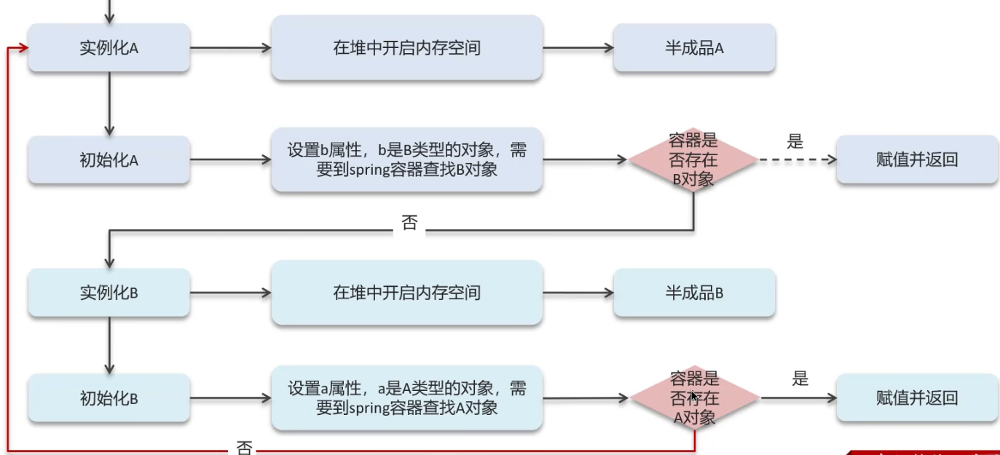
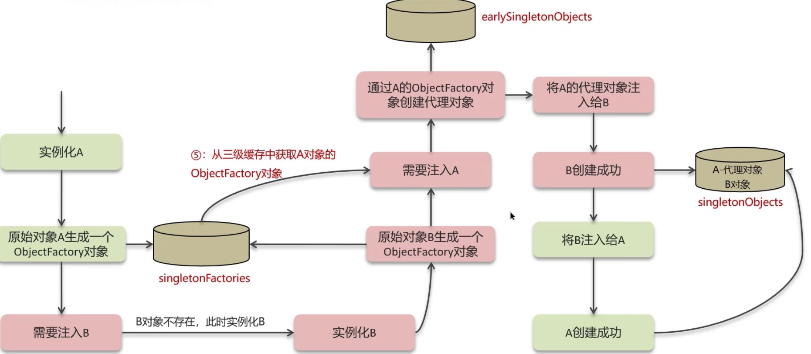
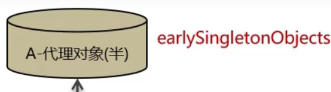

当实例化A的时候，在堆中开启内存空间，产生半成品A，然后初始化A
初始化的过程中会设置b属性，由于b是B类型的对象，需要去Spring容器中查找B对象，
如果容器中存在B对象，那就正常赋值并返回。反之，如果容器中不存在B对象，那就会去实例化B，
又要去堆中开启内存空间，产生半成品B。然后初始化B,初始化过程中又要设置a的属性，但由于a是A类型的对象，
又双叒叕要去容器中查看A对象，如果存在则赋值返回，不存在，那就回到实例化A的过程，造成循环依赖（循环引用）
简单来说，循环依赖就是循环引用，也就是
两个或两个以上的bean互相持有对方，最终形成闭环，比如A依赖B，B依赖A

为解决问题，Spring提供了一个单实例对象注册器(DefaultSingletonBeanRegistry),在这个类中定义了三个集合，也就是三级缓存
一级缓存：只存放单例对象，也就是对象完全初始化完了，才会放到单例池中
二级缓存：可以存放早期队形，也就是半成品对象
三级缓存：存储bean对象的对象工厂，用来创建某个对象，比如原始对象或者代理对象都可以创建
利用二级缓存可以解决一般对象的循环依赖： 实例化A会产生半成品A，把它放入二级缓存中，然后需要注入B的时候去初始化B，又得到一个半成品B， 再次放入二级缓存中，需要注入A的时候，从二级缓存中拿到半成品A，则注入成功，B创建成功， 然后把B放入一级缓存，也就是单例池中，同理，A注入B，A创建成功，放入单例池。

利用三级缓存可以解决代理对象的循环依赖： 实例化A的时候，生成一个对象工厂对象（专门用来产生对象A），然后放入三级缓存中，接下来是正常流程， Ａ需要注入Ｂ，Ｂ不存在，实例化Ｂ，此时Ｂ也生成了一个对象工厂，放入三级缓存中，此时需要注入Ａ， 从三级缓存中拿到了Ａ对象的工厂对象（可以帮你生成代理／普通对象），然后存入二级缓存中，此时， Ａ代理对象还是一个半成品，

然后将Ａ的代理对象注入Ｂ，Ｂ创建成功，同理Ａ注入Ｂ，Ａ创建成功，将Ｂ对象和Ａ代理对象放入单例池中。 Arkle
Arkle Gavin
Gavin 关于
关于 更多
更多